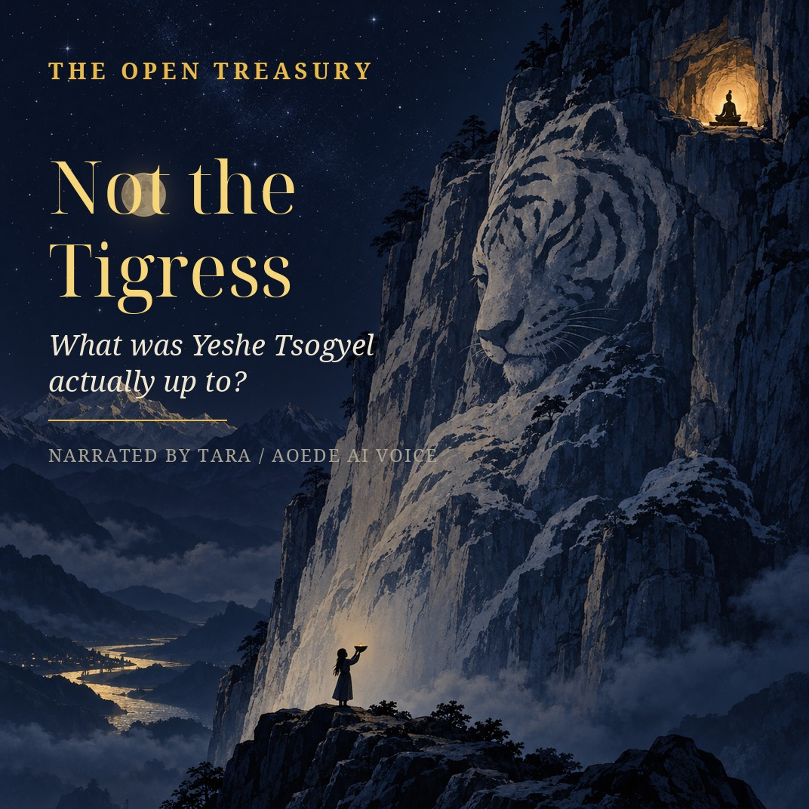

Not the Tigress
A revised, feminist history of Yeshe Tsogyel, built from Adele Tomlin's Dakini Translations essay and the scholarship in its bibliography: Janet Gyatso, Jue Liang, Sonam Kinga, Sonam Wangmo and the Treasury of Lives. Seven textual layers between us and her, the tigress who was somebody else entirely, the girl made of honey and milk, the young consorts and the cougar thesis, and what she was actually up to. Content note: chapter 6 discusses sexual assault in the historical sources, handled with care, with the translation and provenance problems stated.
CC0 1.0 Universal for the original script and commissioned narration. Underlying cited sources retain their own rights; no third-party recordings or images included. Original course commentary for The Open Treasury, based on the publicly accessible sources listed in the source notes. No endorsement by named teachers, authors, institutions or communities is implied.
Synthetic Aoede narration. Automated transcript checks, not a human listen-through or expert review. Final master independently decoded and measured before publication. Transcription checks cannot certify every pronunciation or small audible artifact.
Quotes from Keith Dowman's Sky Dancer translation were checked against two independent published reprintings, not against the book itself; this limitation is stated in chapter 6. Several cited works could not be obtained in full and are named on air in chapter 8. Public introductory study, not lineage transmission, empowerment or expert review.
Support is never expected; if you enjoy the Treasury, a voluntary dana at buymeacoffee.com/joematten helps keep it going.
Chapters
- 00:00 Introduction: The Tigress That Wasn’t
- 05:54 The Woman in the Manuscripts
- 16:08 What She Was Actually Up To
- 24:43 The Girl Made of Honey and Milk
- 33:46 The Cougar Question
- 41:30 The Hardest Song
- 48:27 Was She a Feminist?
- 55:15 The Archive That Walked
Watch the moving edition
YouTube: original symbolic moving edition
Read alongside the episode
Complete prepared spoken script
Credits and source notes
Download MP3